| 1 | : 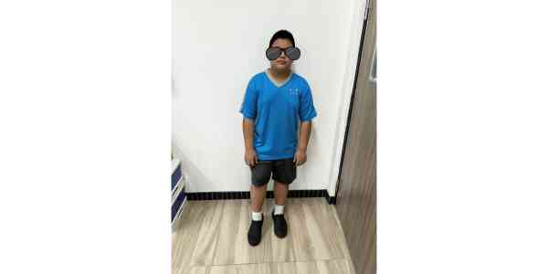 |
大家好，我是王O浩，我喜歡打籃球，喜歡吃蛋炒飯，有時候會幫忙家裡打掃，不太愛寫功課。 |
| 2 | : 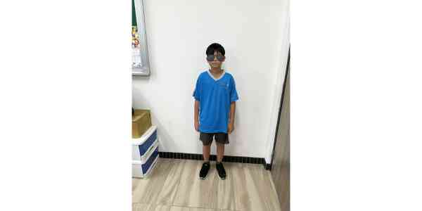 |
大家好我叫李O浩，我來自基隆，我覺得我有很多地方不足，我有時候自己的成績和作業的時候我會覺得自己明明做得很好但為什麼和別人差這麼多，我覺得我的記憶力不太好，我希望能變得更好。 |
| 3 | 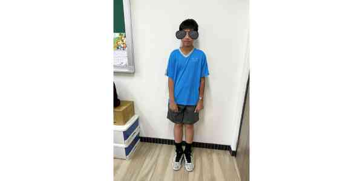 |
大家好，我叫李O銘。我喜歡打籃球和羽球，也喜歡打電動，國小時就讀信義國小，來銘傳是為了讀好書考好高中，希望這三年能和大家好好相處。 |
| 4 | 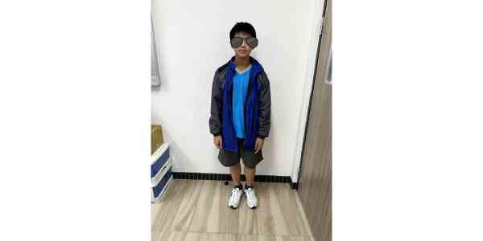 |
我是712班4號吳O賢，我的興趣是打電動和打籃球，最討厭上英文課和音樂課。我希望下一個學期我的成績能越來越好到前十名。 |
| 5 | 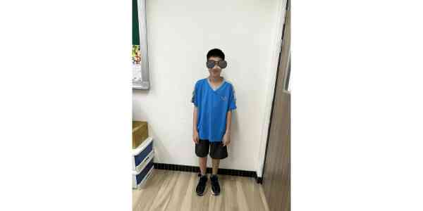 |
我是李O喻，我的生日是4月6日，我喜歡吃美食，我的興趣是玩遊戲，我最喜科目是自然，希望我的功課可以越來越好。 |
| 6 | 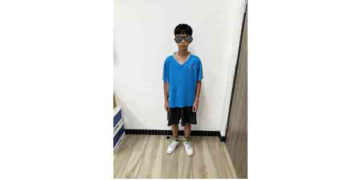 |
我是祁O棠，我來自仁愛國小，我為什麼來這間學校讀書，因為我哥哥從這間學校畢業的，我喜歡什麼運動，我喜歡玩羽球、籃球，我自從到銘傳國中沒什麼在打籃球，因為離教室的距離有點遠，除非體育課。 |
| 7 | 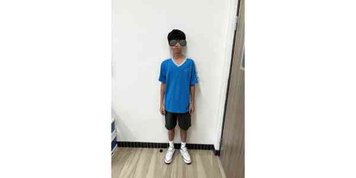 |
大家好，我叫俞O任，我的個性開朗、外向，我的興趣是打籃球、騎腳踏車，但我比較喜歡打籃球，騎腳踏車是因為喜歡追求刺激感。 |
| 8 | 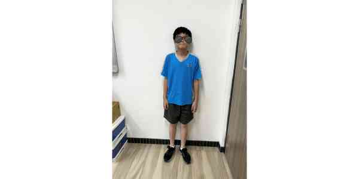 |
大家好，我是陳O圻。我來自新北市秀峰國小，因為要考高中，所以來銘傳國中上學。雖然我離開家鄉，不過我並不覺得不開心，如果我考上好的高中，爸媽一定會很開心。 |
| 9 | 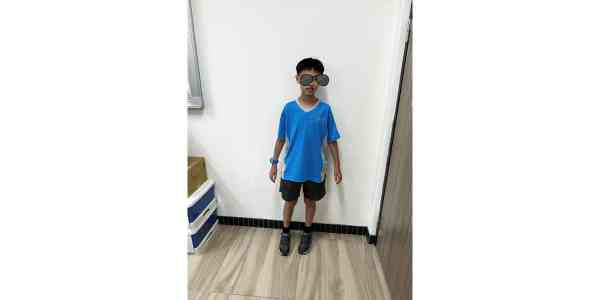 |
大家好，我是712班9號許O齊，我擅長的科目是英文和資訊，我平時喜歡做的休閒活動是騎腳踏車，我覺得最困難的科目是國文。 |
| 10 | 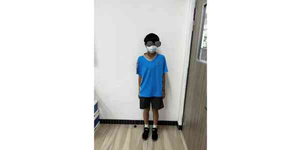 |
我是712班10號黃O浩，我的興趣是玩遊戲最討厭上英文課，但我希望我的成績越來越好，這樣就不會被罵，也希望下次月考能進前十。 |
| 11 | 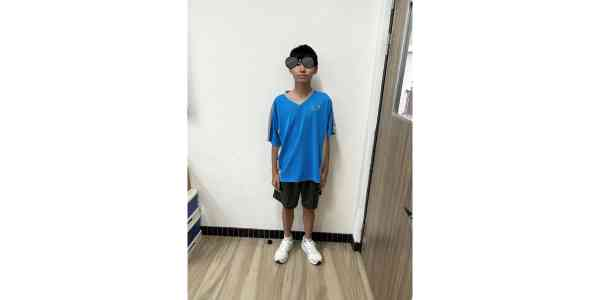 |
大家好我是發哥，我的興趣是打羽毛球、下象棋、聽音樂跟唱歌，我是個不怎麼喝含糖飲料的人，因為喝含糖飲料會暫時停止身體的生長，所以有人請我喝飲料，我都會為婉拒絕，我平常也會閱讀一些小說，來增長我的閱讀能力。 |
| 12 | 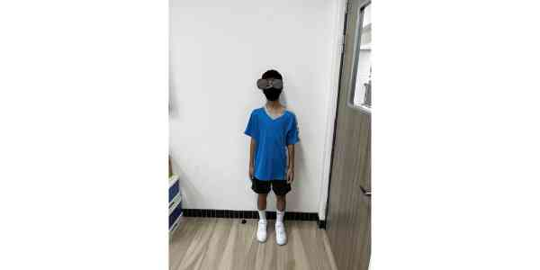 |
大家好，我的名字叫蘇O壬，我的興趣是打籃球，我的個性是跟不熟的人就會比較內向，跟熟的人就比較外向。 |
| 13 | 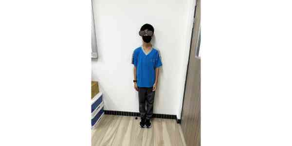 |
我是蘇O昕，我的個性比較內向，但熟了就還好，我的興趣是打球、滑手機，在國中三年裡我希望可以顧好課業、交到許多好朋友。 |
| 14 |